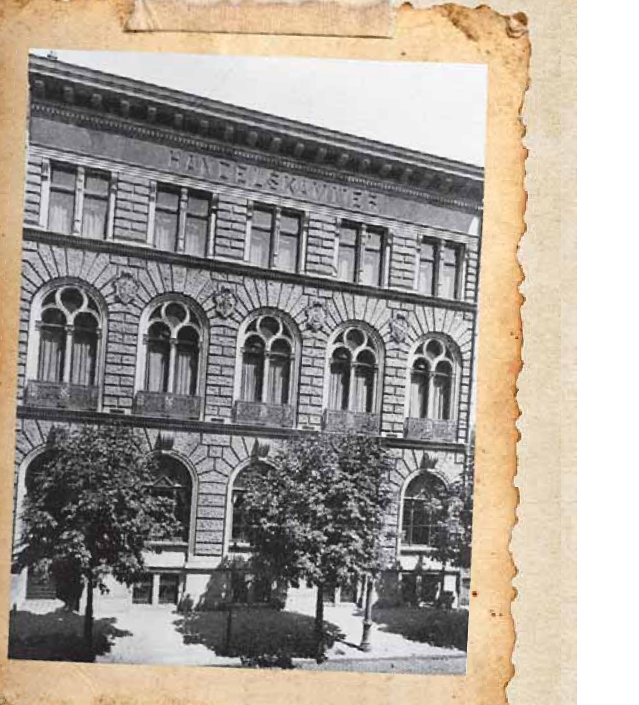
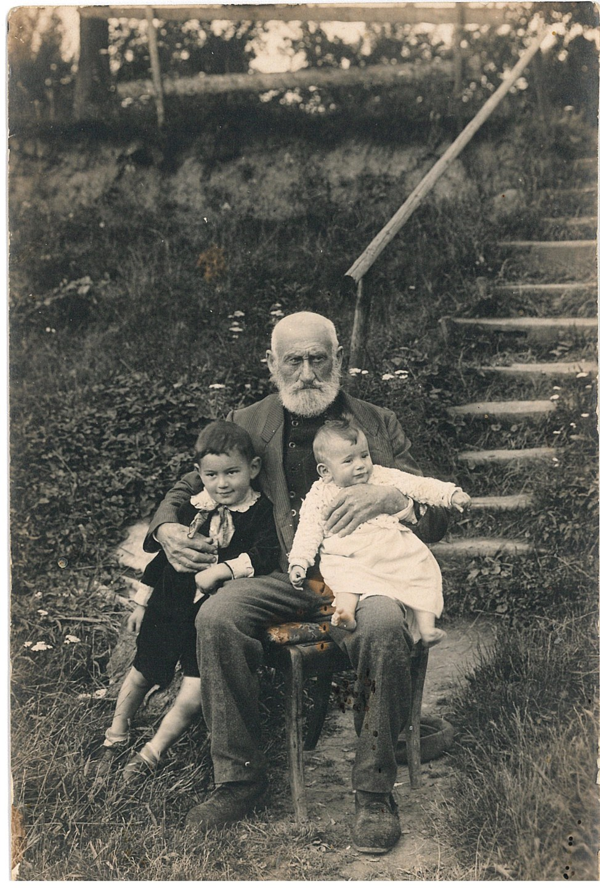
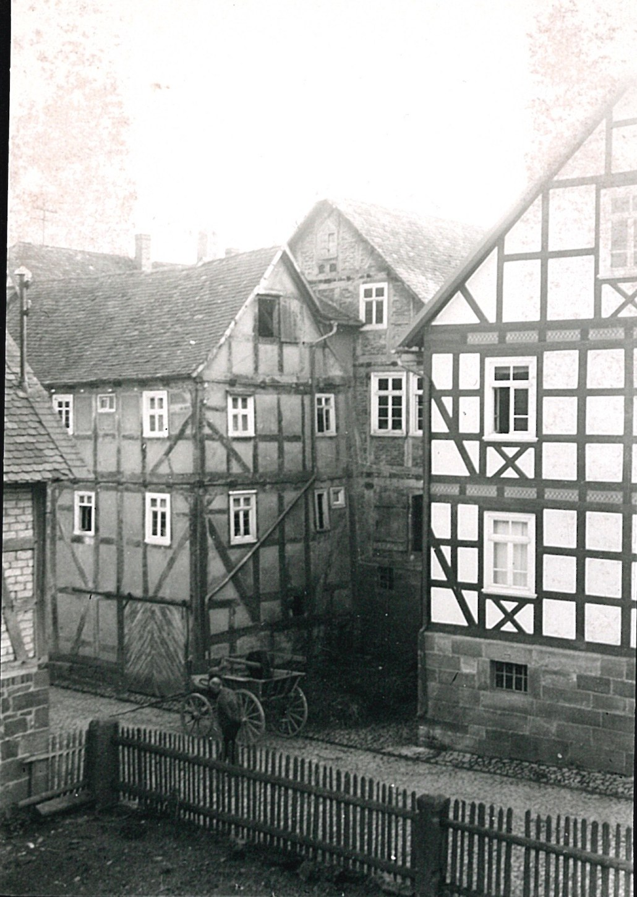
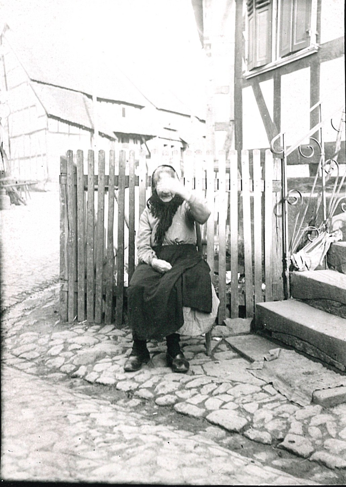
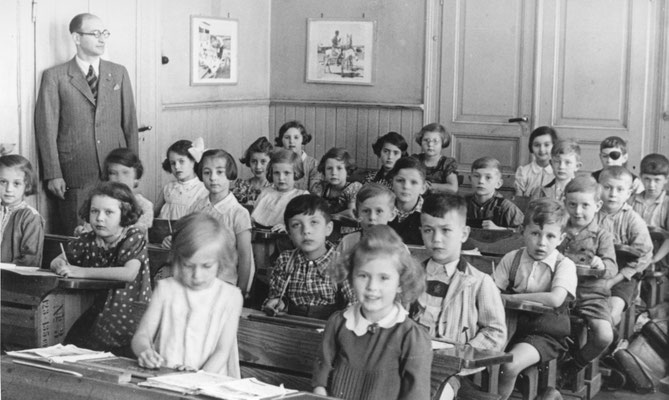
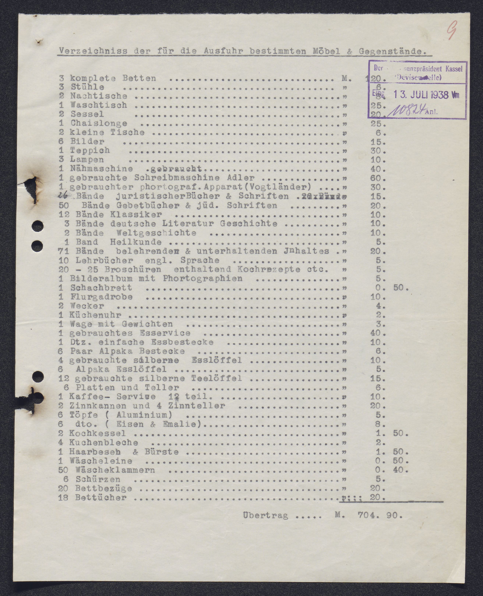
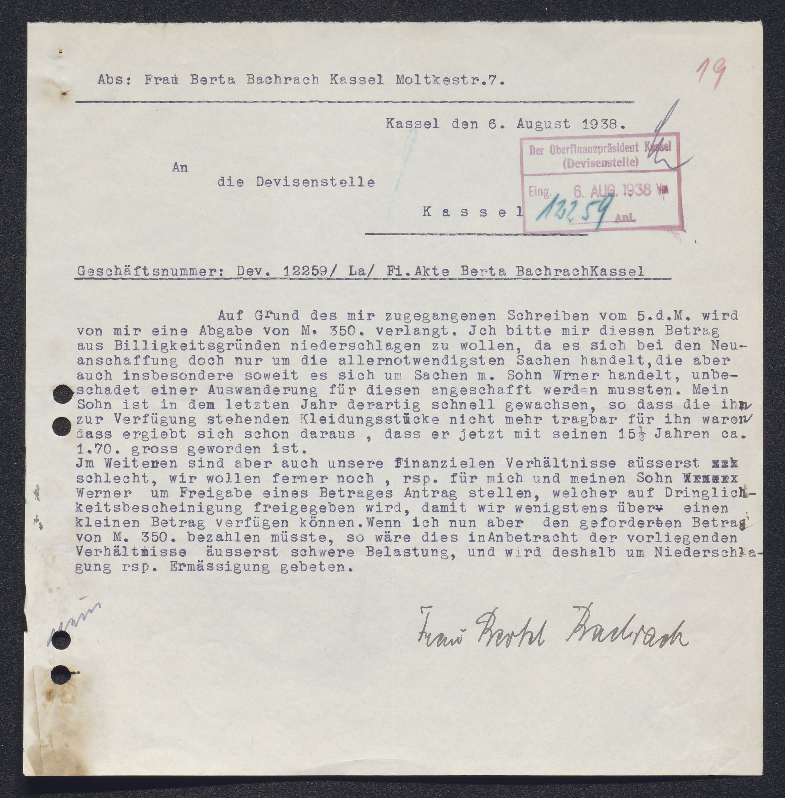
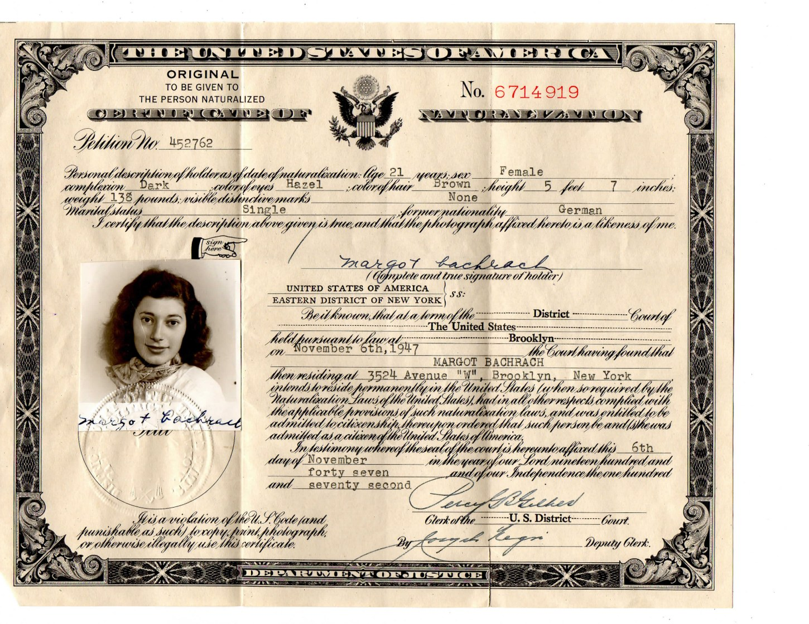
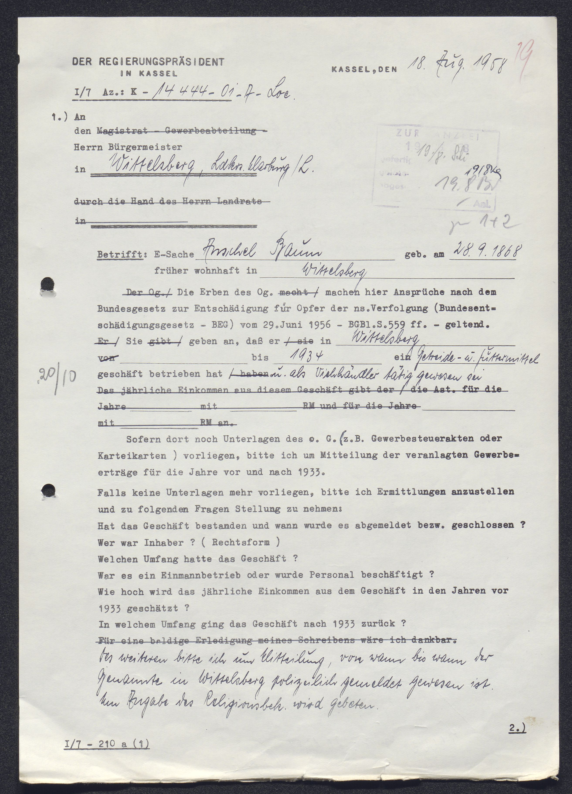

Margot’s family & WWII
Margot left Germany at nine. Her parents, brother and grandparents took different routes through persecution, refuge and the years after the war.
Samuel of Frielendorf and Bertha of Wittelsberg
Samuel Bachrach was born in Frielendorf on March 17, 1890. He was one of nine children born to Jakob and his wife, Auguste "Gustel" Steinfeld. Samuel was the eldest of the four who survived to adulthood. Jakob was a master butcher, as his own father had been. He expected Samuel to learn the trade, but also had aspirations for his son to benefit from the new economic opportunities of a modernizing world. To that end, Jakob paid for his son to have private lessons in "foreign languages" (English, and likely French as well) while he was still in elementary school.
Bertha Baum was born on October 24, 1901, in Wittelsberg. She was the eldest child of Anschel Baum and Lina Grünbaum. Bertha grew up with two brothers, Ludwig and Ernst, and a sister, Frieda. Their father dealt in cattle, grain, and animal feed. Their house had room for three generations, a stable for the animals, and a room where the Jews of Wittelsberg gathered for services.

At seventeen, Samuel left Frielendorf for Kassel. He trained in two sausage factories and qualified as a master butcher at twenty-one. While learning the trade, he enrolled in Kassel’s municipal commercial school. He went on to work in Frankfurt for a firm called Sommer Import-Export, which was likely a sausage casing business, where he became a personnel manager. In 1914, at the start of World War I, he was called up to serve in the German army. After the war he returned to his father’s business in Frielendorf and began studying on his own for a different line of work, advising people on legal and business matters.


Two of Bertha’s Baum relatives, the brothers Theodor and Hermann, died fighting for Germany, Theodor on the Eastern Front in 1914 and Hermann on the Western Front in 1917. Jewish residents contributed to a village war memorial, but the Protestant pastor insisted it stand in front of the church. When the Jewish community’s request for a place on common ground failed, the congregation put up a marble plaque inside the synagogue in Holzhausen.

On August 22, 1921, Bertha, nineteen, and Samuel, thirty-one, married in Wittelsberg. Their families had known each other for at least forty years. The newlyweds made their home in Frielendorf, where their son Werner was born in 1923 and their daughter Margot on December 20, 1925. Notably, these names were not Jewish, and likely reflected aspirations of assimilation into a country that, under the Weimar Republic, presented new opportunities for Jews to participate in the larger society. During this period, German Jews were increasingly moving to cities and intermarriage with non-Jews was becoming more common.
Samuel and Bertha’s family tree


Childhood in Kassel
In 1927, before Margot turned two, the family moved to Kassel, a city of 175,000 people. Samuel had resided in Kassel during his apprenticeship. This time he came with a wife and two children and set up in business for himself. The 1930 city directory lists him as a merchant at the address Wilhelmshöher Allee 99. A year later it notes he had an office on Königsplatz, in the center of the city, and calls him a Syndikus, a legal and business adviser. Samuel worked for the local association of German radio listeners, which provided advocacy services for people who owned radios (and were required to pay a radio licensing fee). He also ran a practice that helped people settle debts out of court. At the height of his business, he employed three or four people.
The Bachrach apartment had many of the trappings of middle-class life: an Adler typewriter, English textbooks, a Voigtländer camera, and a chessboard. They also owned fifty volumes of prayer books and Jewish writings.
Margot attended kindergarten at a Catholic school. The Jewish children were excused from prayers. One day she was still there when it was time to go to chapel. “Since the nun knew I would not know what to do she kept me next to her,” Margot remembered.
Margot often spent time in Wittelsberg with her maternal grandparents and later said she felt as though Anschel and Lina had raised her.
Leaving the house in Wittelsberg
Margot was seven when Hitler came to power. On March 24, 1933, Nazi storm troopers occupied Kassel’s city hall, forced the elected mayor to resign, and beat city officials. There were also physical attacks on a small number of Jewish residents of Kassel. Two were Jewish lawyers and one, Max Plaut, died of his injuries. The nationwide boycott of Jewish businesses followed on April 1. In Kassel the local Nazi press had been urging readers to shun Jewish businesses for years.
Bertha took Werner and Margot to stay with Anschel and Lina. Samuel remained in Kassel to earn what he could. The explanation Margot was given was that her grandparents were leaving for America and needed help selling the house and packing, but there may have also been concern that the situation for Jews was less safe in Kassel. Margot and Werner went to the village school during the 1933–34 school year. They shared a single classroom with the other village children.

In Wittelsberg the boycott reached into the cattle yard. Farmers who continued to deal with Jewish merchants risked losing customers for their milk. Some came to trade after dark. Anschel was in his sixties, in poor health, and losing his livelihood. Migrating to Brooklyn was the obvious choice in this situation. Bertha’s sister Frieda left in 1927, which was fortuitous for the rest of the family since immigration restrictions increased over the following three years. Frieda’s presence may have helped her brothers Ernst and Ludwig emigrate in 1929 and 1930, respectively, and their availability as visa sponsors enabled their parents to travel to the US in 1934. Bertha and Samuel had limited space in their Kassel apartment. Their economic fortunes were declining since Samuel was barred by the Nazi regime from practicing as a Syndikus, and Samuel was responsible for his own aging parents as well.
David Baum’s Wittelsberg photographs
These photos were taken by David Baum, Anschel’s brother and Margot’s great-uncle. David grew up in Wittelsberg but lived in Elmshorn, in northern Germany, where he worked as a religion teacher. In all likelihood, he took these photos in 1934 during his last trip to Wittelsberg before the war, and he was documenting his ancestral home before his brother sold the house and moved to Brooklyn. He created a collage out of these photos, which his wife Paula later donated to the Leo Baeck Institute in Manhattan.







Bertha was there as her parents emptied House No. 33. Of its thirteen rooms, twelve were furnished. She remembered eight furnished bedrooms, including one for guests, and the mahogany furniture in her grandfather’s room. One cupboard had secret compartments. There were carpets, a nearly new sewing machine, a horse, and two wagons. Buyers took the antiques for a fraction of their value and collected things at night, as Bertha put it, “to avoid difficulties.” Anschel sold the house to a man named Andreas Gossmann.

On June 21, 1934, Anschel and Lina sailed from Bremen for New York aboard the General von Steuben. They settled at 427 St. Johns Place in Brooklyn, a short walk from Frieda.
The situation for Jews in Wittelsberg further deteriorated after the Baums left. An increasing share of the village’s voters had supported the Nazi Party in the years before the family’s departure. By the local elections of March 1933, Wittelsberg was a Nazi stronghold. In April 1935, five residents woke to find antisemitic slogans painted on their houses, barns, or stalls because they had done business with Jewish neighbors. The Gestapo declined to act. That June, vandals desecrated the synagogue at Holzhausen on the eve of a bar mitzvah. Around the following New Year, intruders took the congregation’s scrolls, prayer books, and silver. In February 1936, Anschel’s cousin Karl Baum, his wife Jenny, and their daughter Karla left for America. Too few Jewish men remained to form the quorum of ten for public prayers. The remaining congregants went to Mardorf for services.
Margot’s last school year in Germany
After Anschel and Lina left, Bertha took the children back to Kassel. Samuel’s father, Jakob Noa, died on July 7, 1934, at the hospital in Treysa. His widow, Gustel, came to live with Samuel’s family. That year the regime barred Samuel from working as a legal adviser. He turned to real estate, but the family had trouble collecting money owed to them and sometimes struggled to put food on the table.
For third grade, Margot went to the Jewish elementary school at Große Rosenstraße 22. About 176 children had attended in 1933. Even as Jewish families left Germany, enrollment grew as parents took children out of schools where the Hitler salute and lessons on race had become part of the day. At the Jewish school, classes began with an hour of Hebrew. The children had Saturdays off and took music, handicrafts, and physical education in the afternoons. On the walk to school they could still encounter boys who shouted insults or threatened them. The teachers told the children to keep walking.


In that school Margot met Marion Wertheim, whose family, like hers, had come to Kassel from a smaller Hessian community. The two would reunite on Long Island decades later.
A crossing at nine
At some point in 1934 or 1935, Bertha and Samuel decided that they would send Margot to live in the US with Bertha’s sister Frieda and cousin Betty Jane. They would stay in Germany with Werner, with no clear plans to reunite with Margot. This decision to send a nine-year-old daughter away is difficult to understand, but there are several context clues that can help shed some light on it.
First, it is apparent that Margot was not doing well amid her family’s declining economic position and her grandparents’ move to the US. According to Margot’s recollections, Frieda was apparently alarmed that she arrived unhealthily skinny, with visible ribs, which Margot attributed to her mother’s cooking being “less than good.” Margot also saw her grandparents as parental figures, perhaps more so than her actual parents, so their separation was likely emotionally difficult.
An open question is the degree to which Samuel and Bertha’s fears about persecution by the Nazi regime motivated the decision to send Margot away. On the one hand, in 1935, the nationwide pogrom of November 1938 was still three years away, although Jews had already faced beatings and other public violence. Jewish emigration was increasing, especially in light of the September 1935 Nuremberg laws, but not dramatically.
On the other hand, a small movement to send Jewish children out of Germany for their protection, without their parents, was already under way. Most Jews at the time likely saw it as an extreme measure and an overreaction. Some, however, worked with German Jewish Children’s Aid, founded in 1934, to send their children to live with unknown Jewish families in the US. This was seen as a temporary arrangement, although the timelines and plans for reunification were unclear. In 1935, German Jewish Children’s Aid sent about 100 children to the US under these arrangements.
Most children would not have been able to come without the organization, because they lacked US relatives who could serve as visa sponsors. Margot, however, was in the unique position of having US relatives to sponsor her trip. A review of passenger manifests from 1935 shows that Margot was one of only 37 German-born Jewish children under age 16 who traveled alone to the US to live with extended family.
Even by the standards of this small relocation effort, Margot’s resettlement to the US was unusual. Most of the children who relocated to the US in 1935 were boys, and most were ages 12 or older. Margot was one of only three girls ages 10 or younger to travel under these circumstances.
In September 1935, Samuel went with his daughter by train to Hamburg. They stayed overnight with a relative, then took the boat train to Cuxhaven, where the liner Hamburg took on passengers. On September 19, Samuel left Margot in the care of a governess employed by the ship company. Margot boarded with ten Deutsche Marks.


Margot remembered playing with other children during the eight days at sea. She also remembered the governess offering to sell her balloons, then telling a colleague that Margot would be too cheap to buy them because she was Jewish.
The Hamburg reached New York on Friday, September 27. Rosh Hashanah would begin that evening. Frieda, her husband, and Betty Jane were there to meet Margot. Her first words to them were “Guckt mal, meine neuen Lackschuhe!” (“Look at my new patent leather shoes!”). Her parents had found the money to send her off in a pair of shoes she was proud to show her cousin.
Margot lived with Frieda’s family at 794 Washington Avenue in Brooklyn, in the apartment above what is now Café Shane. The address appears in the 1936 Brooklyn telephone directory. Her grandparents lived a short walk away at 427 St. Johns Place. Margot had been in fourth grade in Kassel. In Brooklyn, because she spoke no English, she was put back into second grade. Nearly ten years old and much taller than the other children, she remembered “feeling like a giraffe.” She learned English, caught up with her classmates, and graduated at eighteen.
Bertha and Werner sail for New York
When Germany annexed Austria in March of 1938, non-Jewish residents of Vienna beat and tortured Jews in the streets. The level of public violence against Jews was so severe that it reportedly shocked even some German Nazis at the scene.
This event raised the level of urgency felt among German Jews to leave the country, and led to a rush for visas to enter the US and elsewhere. This was the context in which Samuel and Bertha began preparing to leave for the US with Werner. They moved Gustel to a Jewish retirement home in Frankfurt, near her nephew Noa. Bertha and Werner were able to apply to go to New York.
Samuel, however, was in a more challenging position when it came to immigration. To approve a visa, the US government required a letter from the local police department attesting to a clean criminal record. There was a conviction on Samuel's record in Kassel that prevented this. It is unclear what the conviction was for, or when it occurred. Since Samuel completed his apprenticeship in Kassel during his youth, it could have occurred at that time. He applied for expungement, which was granted on July 4. By that time, however, the wait for a US visa had grown considerably.
Faced with this obstacle, the family devised a new plan: Bertha and Werner would travel to New York City via Hamburg, successfully booking passage on a ship that departed on August 20th. Samuel planned to travel to Cuba, which many German and Austrian Jews used as a temporary "waiting room" while their US immigration cases proceeded. Entry could still be arranged through landing permits or tourist documentation, although the system was unstable and would soon become far more restrictive. Because the criminal-record matter had slowed his application, and departures were filling rapidly as emigration surged, Samuel could not secure Cuba-bound passage for several months.


As the family prepared to leave the country, they had to navigate the economic sanctions of the Nazi regime. Applying for their visas triggered economic controls over the family's assets, as the family’s foreign-exchange file shows. Money could not be sent out of the country without permission, and even personal items could incur steep levies. The authorities examined when goods had been acquired and could assess a levy as high as their full value.
Bertha had her items inventoried by a Nazi official, who produced a tax bill. Bertha appealed when her son's clothing was taxed at high rate. She argued that her son was fifteen and had grown quickly. He was already five foot seven and she had bought only what he needed to fit him. The family could ill afford to pay for those things a second time. In the end, she paid the full 350 marks. Customs cleared the shipment two days later.





When they reached Brooklyn, mother and daughter were living in the same city again, almost three years after Margot’s crossing. Margot was twelve. She stayed with Frieda, who raised her and Betty Jane as sisters. What had begun with a passage booked by her family amounted to an informal adoption. When Anschel died in Brooklyn on November 20, 1938, Lina came to live with them, too. Margot finally shared a home with her grandmother again.
Samuel in Copenhagen
Samuel made it to Denmark. He had a ticket to Havana aboard the Burgerdijk, but to land in Cuba he also needed money he had deposited in Germany. The German Foreign Exchange Office refused to release the equivalent of 100 Reichsmarks in landing money, and the October sailing went without him. A November letter from the travel agency records what he asked it to do with the money left behind. He wanted it given to Youth Aliyah, which helped Jewish young people emigrate to Palestine.

Samuel was stuck in Denmark. That autumn, word reached him from his cousin Noa that his mother had died in Frankfurt. Cuba tightened its entry requirements in 1939. In August, Germany stripped Samuel of his citizenship. By the time war broke out in September, he was in Copenhagen with an invalid German passport, while Bertha and both children were in New York.
As a refugee, Samuel had no permit to work. He lived in boarding houses and received a small allowance from Copenhagen’s Jewish community, which also ran soup kitchens. In his first year there he met Ilse Gellin, née Pietsch. Born in Kiel, in northern Germany, she had been a dancer, held Danish citizenship, and was now earning her living as a chiropodist (foot care technician). In November 1939 Samuel moved in with her. The census the following year described him as an unemployed boarder.

Germany occupied Denmark in April 1940. Back in Kassel, the Gestapo was still pursuing the family’s assets. In May, the Gestapo reported finding and seizing a bank account containing 422.60 Reichsmarks (roughly $2,500 in 2026 USD).
For more than three years after the occupation began, Samuel and Ilse remained in Copenhagen. At the end of September 1943, word leaked that German authorities were preparing to arrest the Jews of Denmark. Neighbors and resistance groups helped families reach the coast, and fishing boats and other small craft carried thousands across the narrow stretch of water to neutral Sweden. Samuel and Ilse escaped in that rescue. Samuel reached Helsingborg on October 5. Nine days later, in Alingsås, he signed an application for an alien’s passport. In the space for nationality he reported “stateless.”

Two families after the war
After about a year and a half in Sweden, Samuel and Ilse returned to Copenhagen in 1945. Samuel and Bertha divorced. In 1946 Bertha married Paul Lowenger, a refugee from Vienna who had fled in 1939 and found work as a shipping clerk for a Brooklyn garment wholesaler. Through newspapers like Aufbau, German-speaking Jews in America could still find news of people they had known in Europe.

Werner enlisted in the U.S. Army at nineteen, trained in Mississippi, and was discharged as a sergeant in 1945. After the war he worked in a Brooklyn shipyard and traveled the world.

On November 6, 1947, Margot became an American citizen in Brooklyn. She was twenty-one. The following October she married Murry Rosenblum, a Brooklyn electrical contractor. Their son Richard was just over a year old when Murry died suddenly in December 1950. Margot later married Irving Feldman, who adopted Richard in 1958.



In Copenhagen, Samuel worked as a commercial clerk from 1946 to 1955. It was the first regular employment he had been able to take up in years. He and Ilse married and ran a perfumery called Parfumeri 666. From their home in Herlev, outside Copenhagen, he also took up a familiar kind of work on behalf of his family in Brooklyn.
Restitution claims
In the 1950s, West Germany began hearing the family’s claims for compensation. Samuel’s own file eventually ran to some two thousand pages. He helped his children with their claims and represented the heirs of Anschel and Lina. Bertha signed the application for her father’s losses. Her brother Ludwig signed a power of attorney in Brooklyn giving his former brother-in-law in Denmark authority to act for him in Germany.


To learn what had happened to Anschel’s business, the compensation office in Kassel wrote to the mayor of Wittelsberg. Officials took statements from Anschel's former neighbors Wilhelm and Heinrich Peil. Both remembered people collecting things at night. They downplayed the persecution, describing the furnishings as modest and the sales as voluntary. The officials ultimately agreed that the sales had occurred under coercive circumstances.


Samuel died in Copenhagen in 1977 and was buried in the city’s Jewish cemetery. Ilse died in 1992. A fund in their names went on supporting the Danish Jewish community that had helped Samuel during his first years in exile.